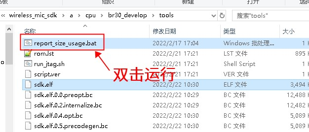
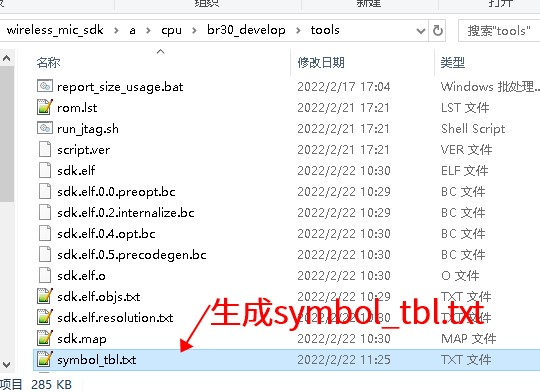
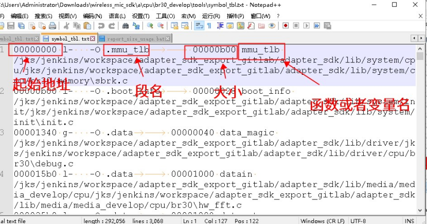
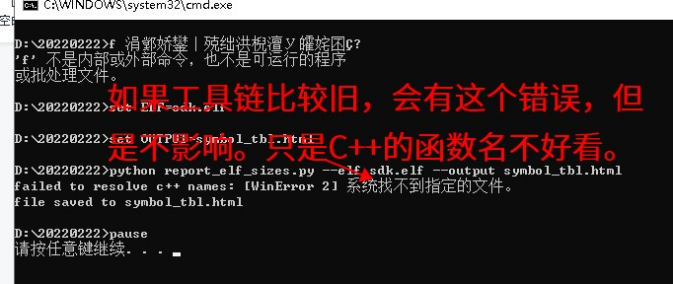
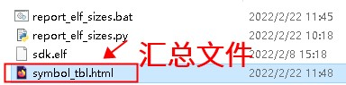
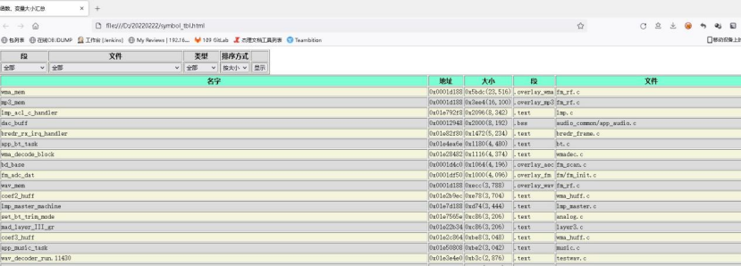

4.1.7.2. 查看使用细节，即每个函数、变量的大小
4.1.7.2.1. 生成symbol_tbl.txt的方式
Note
目前SDK中，生成的symbol_tbl.txt不是使用llvm-objsizedump.exe生成，不合符要求，需要用下面的脚本
获取report_size_usage.bat脚本
将下面的脚本，放到sdk.elf所在的目录，并双击打开：
注意脚本的文本内容如下：
@rem 放到下载目录中
@rem 会把 sdk.elf 中使用的空间大小，
@rem 按地址排序，输出到 symbol_tbl.txt 中
set OBJSIZEDUMP=C:\JL\pi32\bin\llvm-objsizedump.exe
set ELF=sdk.elf
set OUTPUT=symbol_tbl.txt
双击运行脚本
将脚本放到sdk.elf所在的目录（一般就是下载目录），并双击打开：


symbol_tbl.txt文件的格式
这个symbol_tbl.txt里面的格式如下：

4.1.7.2.2. 生成symbol_tbl.html的方式
如果希望可以更方便查看，可以利用下面脚本来生成HTML格式的文件，然后用浏览器来查看：
安装python3
下载并安装python3（点击此处下载），注意安装的时候，需要勾选选项，把python添加在PATH中：

获取并运行report_elf_sizes.py与report_elf_sizes.bat脚本
下载汇总符号大小工具（点击此处下载），解压得到report_elf_sizes.py和report_elf_sizes.bat，并放到sdk.elf所在的目录(一般就是下载目录）：
旧工具链的特别说明
（如果是较旧的工具链，即版本低于2.4.7，因为未附带解析c++函数名的程序，所以会有下面的报错。但是只是会导致c++的名字显示不够好看，不影响其他功能）

4.1.7.2.3. symbol_tbl.html的使用与说明
最后，生成一个symbol_tbl.html的文件在目录下，可以用浏览器双击打开：

打开后，界面类似下面：

可以自行选择过滤条件以及排列方式。